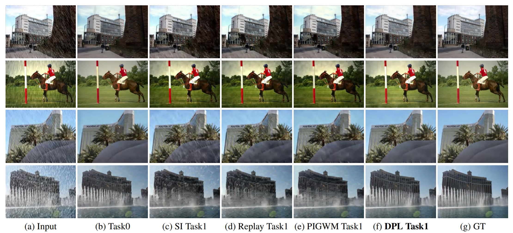

Dual Prompt Learning for Continual Rain Removal from Single Images
Fig.1 The framework of our proposed dual prompt learning for single image rain removal. (a) The training process. (b) The framework for Task t. (c) Details of the prompt pools. First, the input adaptively selects top-N image prompts by measuring the similarity of a prompt and the input image. After selecting, the top-N prompts and the input are concatenated along the channel dimension and fed into the embedding layer together. Similarly, a subset of prompts from the feature prompt pool based on our proposed instance-wise query mechanism is selected and concatenated with embedded tokens along the token length dimension for further training. The objective is to learn to select and update prompts to instruct the transformer-based rain removal model.
Abstract
Recent efforts have achieved remarkable progress on single image deraining on the stationary distributed data. However, catastrophic forgetting raises practical concerns when applying these methods to real applications, where the data distributions change constantly. In this paper, we investigate the continual learning issue for rain removal and develop a novel efficient continual learned deraining transformer. Different from the typical replay or regularization-based methods that increase overall training time or parameter space, our method relies on compact prompts which are small learnable parameters, to maintain both task-invariant and task-specific knowledge. Our prompts are applied at both image and feature levels to leverage effectively transferred knowledge of images and features among different tasks. We conduct comprehensive experiments under widely-used rain removal datasets, where our proposed dual prompt learning consistently outperforms prior state-of-the-art methods. Moreover, we observe that, even though our method is designed for continual learning, it still achieves superior results on the stationary distributed data, which further demonstrates the effectiveness of our method.
Resourses
Citation
@article{lmh2023ijcai, title={Dual Prompt Learning for Continual Rain Removal from Single Images}, author={Liu, Minghao and Yang, Wenhan and Hu, Yuzhang and Liu, Jiaying}, booktitle={International Joint Conference on Artificial Intelligence (IJCAI)}, year={2023}, }
Feature Compression Results
Table 1. Comparison of quantitative results in terms of PSNR and SSIM. The models are trained sequentially on task sequence Rain800-Rain100H using continual learning methods. The baseline is trained on Rain800 solely. All the experiments are tested on Rain800.
Table 2. Comparison of quantitative results in terms of PSNR and SSIM. The models are trained sequentially on task sequence Rain800-Rain100L using continual learning methods and tested on Rain800.

Fig 2. Visual comparison of rain streak removal results generated from the continual learning process using baseline. (a) Input: rainy images from Rain800; (b) Task 0: train and test on Rain800; (c) Task 1 with SI: train on Rain800-Rain100H sequentially and independently (SI) and test on Rain800; (d) Task 1 with replay: train on Rain800-Rain100H sequentially with rehearsal and test on Rain800; (e) Task 1 with PIGWM: train on Rain800-Rain100H sequentially with parameter regularization and test on Rain800; (f) Task 1 with DPL: train on Rain800-Rain100H sequentially with dual prompt learning and test on Rain800; (g) GT: clean image.